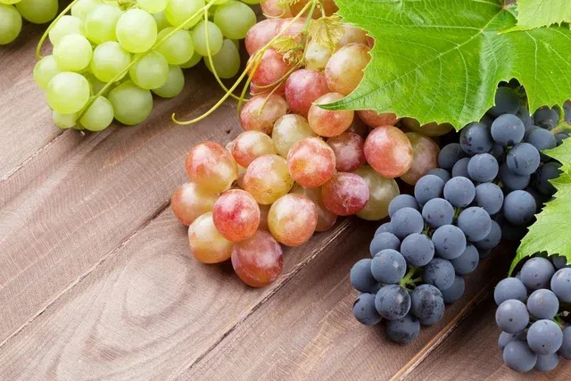
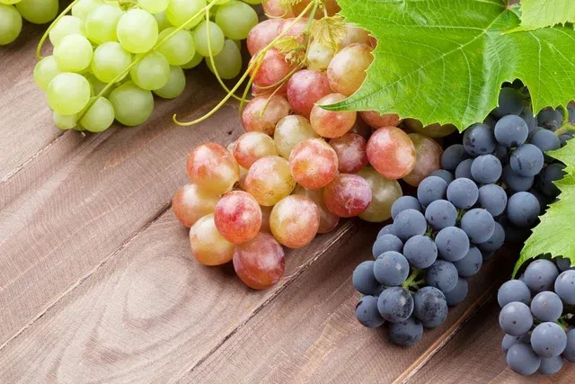
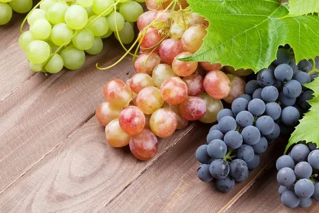
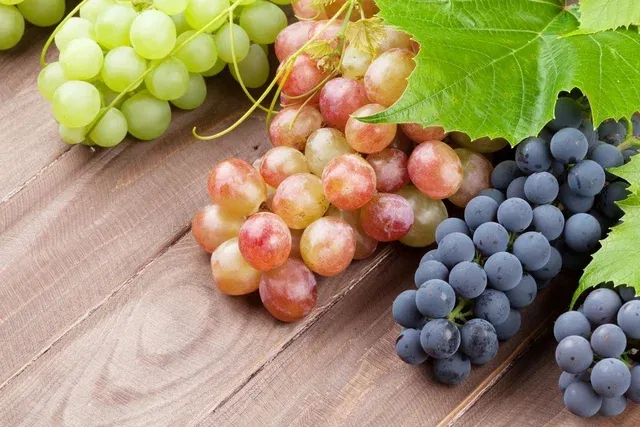

.webp) 

 

1. Un legado milenario: La uva en la historia y la cultura Desde las leyendas persas que narran el descubrimiento del vino hace más de 6.000 años, hasta los banquetes romanos y las ceremonias religiosas, la uva ha sido un testigo privilegiado del devenir histórico. No es solo un alimento, sino un símbolo de fertilidad, prosperidad y espiritualidad, presente en mitos, refranes y obras de arte a lo largo de los siglos. A través de las imágenes de esta exposición, se pueden contemplar los orígenes de la viticultura y cómo este fruto ha evolucionado de un simple recolectado a un cultivo esencial para el desarrollo de diversas civilizaciones.
2. La alquimia de la naturaleza: Forma, color y textura Cada uva es una pequeña joya de la naturaleza. Los racimos, que pueden ser compactos o sueltos, albergan bayas redondas u ovaladas de pieles delgadas pero resistentes. La variedad cromática es asombrosa, abarcando desde los tonos verdes y amarillos más pálidos de variedades como la Airén o la Albariño, hasta los intensos azules, púrpuras y casi negros de la Tempranillo o la Syrah. La textura de la piel, la turgencia de la pulpa y la concentración de la pruina —la capa blanquecina que la recubre— cuentan historias de terroir, clima y maduración.
3. El viaje sensorial: Del viñedo a la copa La uva es el punto de partida de un viaje que culmina en la experiencia del gusto. Cada variedad ofrece un perfil aromático y un sabor distintivo. Mientras que las uvas blancas pueden evocar notas frutales de mango, manzana o melocotón, a menudo con matices florales, las uvas tintas despliegan un espectro de sabores que van desde la ciruela negra y la frambuesa hasta la pimienta, las especias y el cuero. Esta galería es una invitación a visualizar y anticipar esa complejidad, un preludio a la cata donde cada imagen despierta la imaginación del paladar.
4. El arte y la ciencia de la viticultura Detrás de cada racimo hay un complejo proceso de cultivo, una mezcla de tradición ancestral y ciencia moderna. La forma de la cepa, la estructura del racimo y el tamaño de la baya son el resultado de siglos de adaptación y selección. Desde el porte erguido de algunas vides hasta los racimos compactos de otras, las fotografías de esta muestra capturan la minuciosa labor que define el carácter y la calidad de cada uva, revelando la relación simbiótica entre el viticultor y la naturaleza.
Conclusión Al contemplar estos racimos, no solo estamos viendo una fruta. Estamos observando la confluencia de la historia, la geografía y el arte humano. La uva es un recordatorio de cómo los pequeños frutos de la tierra pueden transformarse en experiencias profundas y memorables. Esperamos que esta exposición haya despertado su curiosidad y aprecio por este humilde pero extraordinario fruto, cuyo legado perdura en cada cosecha y en cada botella.